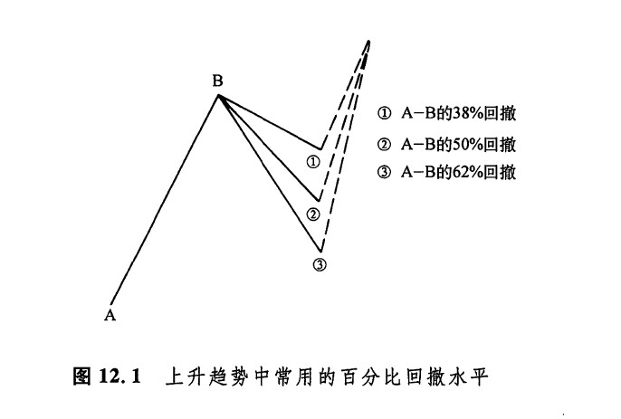
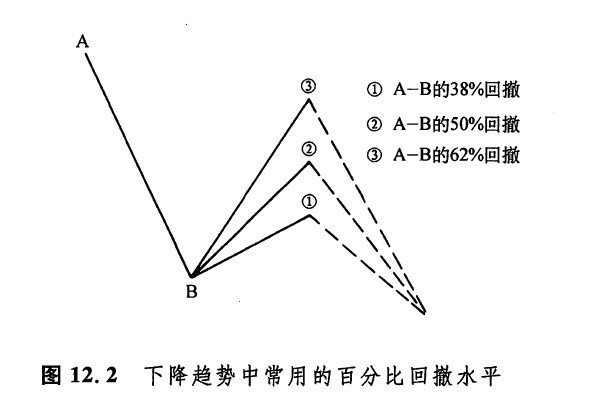
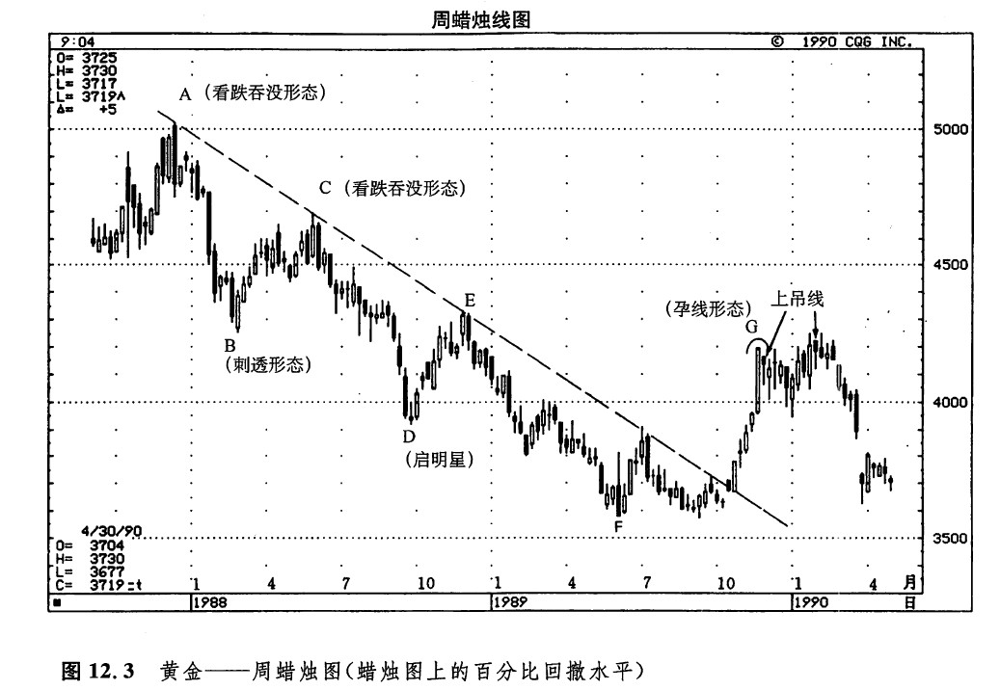
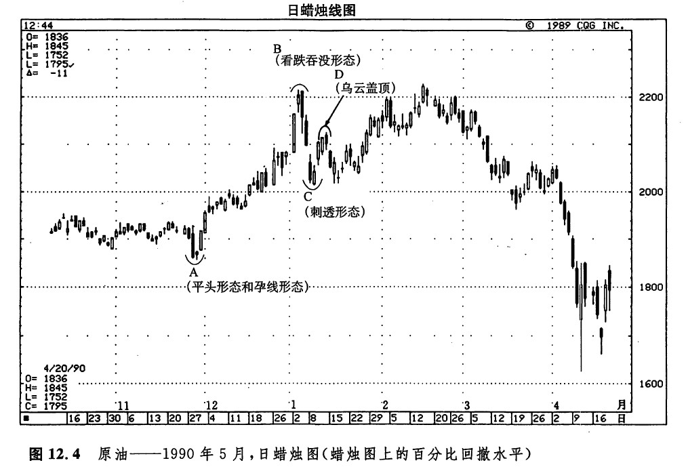
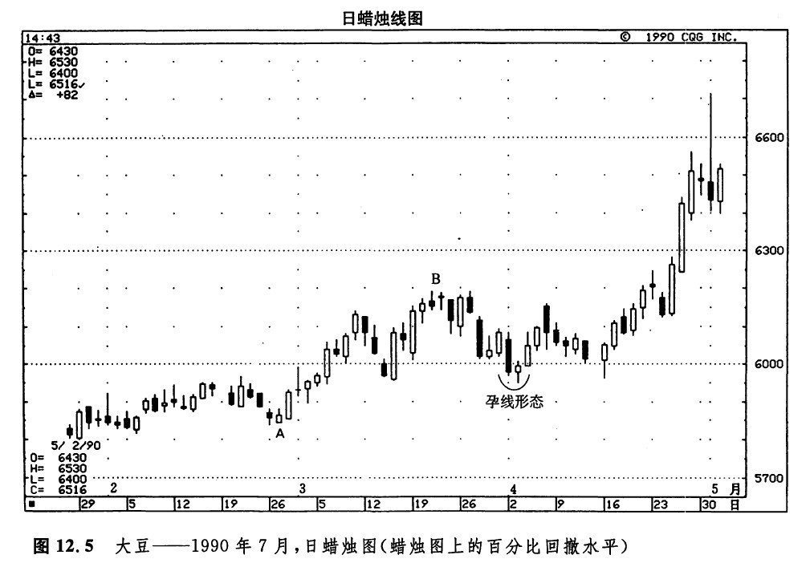
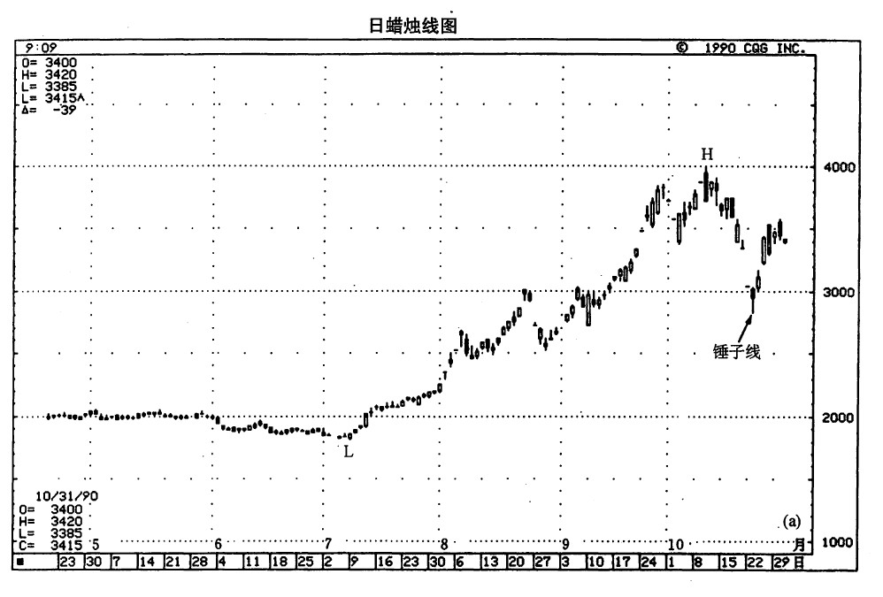
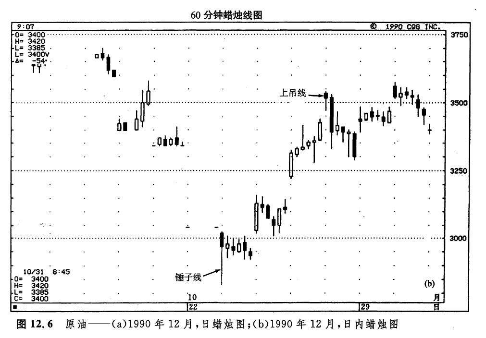

“功到自然成”
通常，市场既不会直线上升，也不会竖直跌落，而是进两步、退一步。在当前趋势继续发展之前，市场通常先要对已经形成的上涨进程或下跌进程作出一定程度的回撤。在这类回撤水平中，较为常用的是50%回撤水平，以及38%和62%的菲波纳奇回撤水平（如图12.1和12.2所示）。菲波纳奇是13世纪的一位数学家，他推导出一组特殊的数列。用不着太深的研究，只要我们把这些数字相互除一下，就能够推算出一组比例数——毫不奇怪，这当然就是菲波纳奇比率。


在这组比率中，包括61.8%（或者它的倒数1.618）和38.2%（或者它的倒数2.618）。这正是62%（61.8%取整）回撤水平和38%（38.2%取整）回撒水平之所以广为流行的原因。常见的50%回撤水平也属于菲波纳青比率。50%回撤水平可能是最受人关注的一个价格水平。这是因为，不论是信奉江恩理论者，还是奉行艾略特波理论者，或者道氏理论的拥护者，统统应用了50%回撒水平。
如图12.3所示，百分比回撤水平能够有效地帮助我们预测一轮熊市中的阻挡区域。在图示的黄金市场上，在过去的数年中，50%回撤水平一直是一个重要的阻挡水平。下面我们就来看看本图中3个具体的实例。在这些例子中，50%回撤水平同蜡烛图技术融为一体，为我们提供了重要的顶部反转信号。

50%回撤实例1——点A所示的高点（位于502美元）出现在1987年，是在一个看跌吞没形态中形成的。从1987年底开始的抛售。行情终止于B点所示的刺透形态，此处为425美元。根据从A到B所示的这段抛售行情的50%回撤水平，市场在464美元处应当遭遇一个阻挡水平（首先将A处高点的价格减去B处低点的价格，再把其差除以2，然后把这个结果加到B 处低点的价格上，就得了这个数字）。因此，在464美元处，我们将仔细观察阻挡作用的发生，并且密切关注看跌的蜡烛图指标的出现，以验证这一阻挡水平。在点C处，果真形成了一个看跌吞没形态。同时，C处最高点的价格是469美元，换言之，它与50%回撤水平仅有5美元之差。之后，市场开始了下一阶段的下跌行情。
50%回撤实例2——从C处开始的抛售行情，终止于D处的一个启明星形态。从C处的高点469美元的水平出发，到D处的低点392美元的水平，其50%回撤水平在430美元，这是一个阻挡区。由此看来，在这一水平附近应当出现看跌的蜡烛图验证信号。在点E所示的区域，黄金市场达到了433美元的水平。在这两根蜡烛线上（11月28日所在的一周和12月5日所在的一周，后者即点E处），只差0.50美元，黄金市场就可以形成一个看跌的吞没形态。从E点开始，又发生了一轮下跌行情。
50%回撤实例3——从E处的高点，到1989年F处的低点（为357美元），价格下跌幅度为76美元。（有意思的是，在上述三段抛售行情中，即从A到B、从C到D、从E到F的三段行情，价格下跌的幅度差不多都是77美元。）在6月5日的低点处，事先没有出现显示底部反转的蜡烛图指标。9月份，市场第二次向下尝试了这个低点，并形成了一根近似锤子线的蜡烛线。
下一个阻挡水平，也就是从E到F的下跌过程的50%回撤水平，是395美元。黄金市场价格后来向上超越了这一水平。不过，这一点并不太值得吃惊。为什么呢？这是因为，在1989年底，黄金市场向上突破了一条为期2年的阻挡线。另一方面，1989年黄金市场还在357美元的水平处形成了一个双重底反转形态，建筑了一个坚实的底部。如此一来，我们就不得不从更大规模上着眼，寻找更大价格运动的50%回撒水平。这就意味着，我们应当计算自1987年的高点（A处）到1989年的低点（F处）的整个下跌过程的50%回撤水平。由此提供了一个位于430美元的阻挡水平。在430美元附近，在11月20日所在的一周（点G处），市场发出了两个信号，标志着当前的上升趋势已经陷入重围。这两个信号就发生在425美元的水平上。其中一个是孕线形态，另一个是一根上吊线，并且后者是该孕线形态的一部分。几周之后，即在1月22日所在的一周，市场达到了当前趋势的顶峰，425美元。接下来一周的价格变化形成了另一根上吊线。从这里起，黄金市场开始下跌。
请看图12.4。位于18美元（点A处）的一个平头底部形态，与一个孕线底部形态结合在一起，构成了一轮幅度达3.50美元的上涨行情的起点。这轮上涨行情在22.15美元（点B处）以一个看跌的吞没形态收场。从A到B的上冲过程的50%回撤水平是20.36美元，意味着这将是一个支撑水平。在点C处，一个看涨的刺透形态形成于20.15美元。从C点开始，市场形成了一段较小的上升行情。因为点D处的乌云盖顶形态的出现，这段上升行情出了问题。有趣的是，点D处的最高点为21.25美元，它与从B到C的下跌行情的50%回撤水平仅有10个基本价格单位的差距。

如图12.5所示，从A到B的上涨行情的62%菲波纳奇回撤水平为5.97美元。这一水平恰巧与市场当初在1月和2月形成的5.95美元的阻挡水平非常接近。现在，5.95美元的阻挡水平已经转化为新的支撑水平。4月2日和3日，当市场向下回落时，5.97美元的价格水平起到了支撑作用，并经受住了考验。这两天的价格变化形成了一个孕线形态，标志着之前的较小的下跌行情的终结。此后，市场似乎为了证明这一回撤水平的可靠性，在4月中旬对这一支撑水平再次进行了成功的试探，然后图示的大豆市场便掉头而去！

如图12.6a所示为原油市场，从7月L处的低点，到10月H处的高点，形成了一段幅度达21.70美元的上涨行情。这段上涨行情的50%回撤水平大致在29.05美元。于是，根据上升行情的50%回撤水平将构成支撑水平的理论，当10月的高点后发生了一轮快速的抛售行情的时候，我们应注意29.05美元上下的位置，这里可能出现看涨的蜡烛图指标。后来的情况果如所料。10月23日，一方面价格向下触及了28.30美元的低点，另一方面，在日蜡烛图上形成了一根锤子线。从这根锤子线起，市场上涨了5美元以上。在包含上述价格变化的日内图表上（如图12.6b所示），我们可以看到，10月23日的第一个小时也形成了一根锤子线。如此一来，在日蜡烛线图上，10月23日是一根锤子线，在日内蜡烛线图上，10月23日的第一个小时也是一根锤子线。如图所示，这是一种罕见的、而且很有意义的巧合。请注意，在这张日内图表上，从上述锤子线开始，市场形成了一段轻快的上升行情。后来当10月26日出现了一根上吊线时，这轮上涨行情才走上了末路。


下一篇：第十三章 蜡烛图与移动平均线
上一篇：极性转换原则